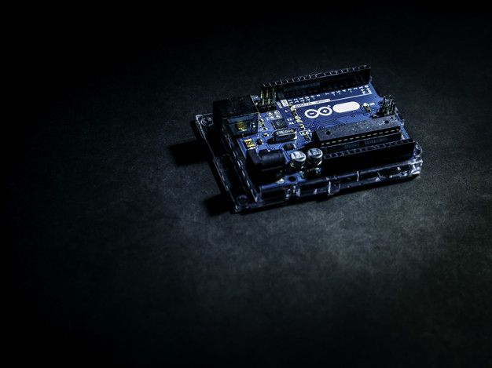
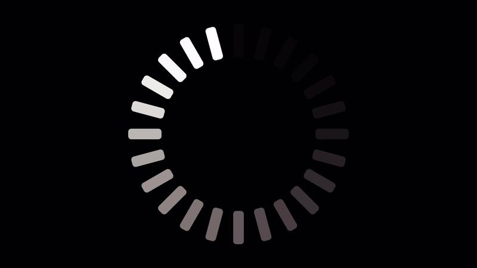

Video tutorial for project 1: Calculator
Intermediate level - 7 estimated hours to complete the project
This tutorial concerns project number 1 and contains the information you need to successfully complete it: video tutorial, text instructions, common mistakes to avoid, and a functional code if you need it.
1. Components needed
To complete this project, as indicated on the box (behind), you will need the following components:
- Component 1
- Component 2
- Component 3
2. Video tutorial
3. Instruction in text
Here are the step-by-step instructions to follow.
4. Code
Below is the code snippet for the project:
// Example code
function example() {
console.log("Hello World");
}
5. Common mistakes
Ensure you avoid these common mistakes while assembling the project.